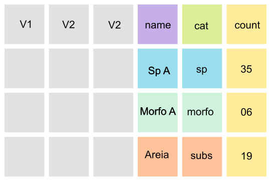
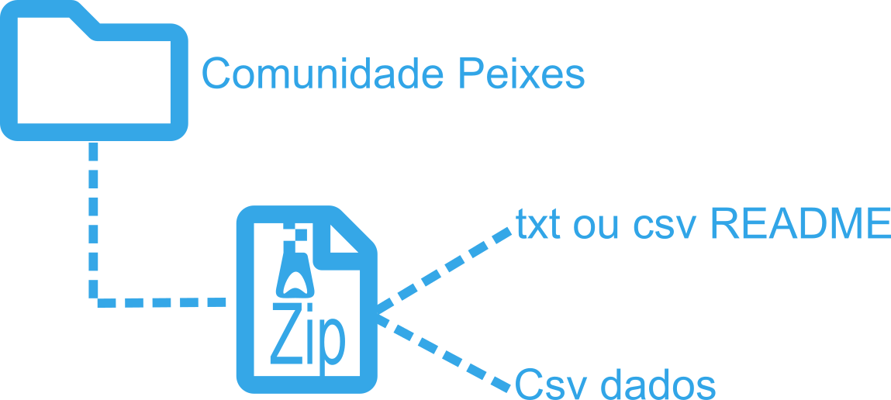
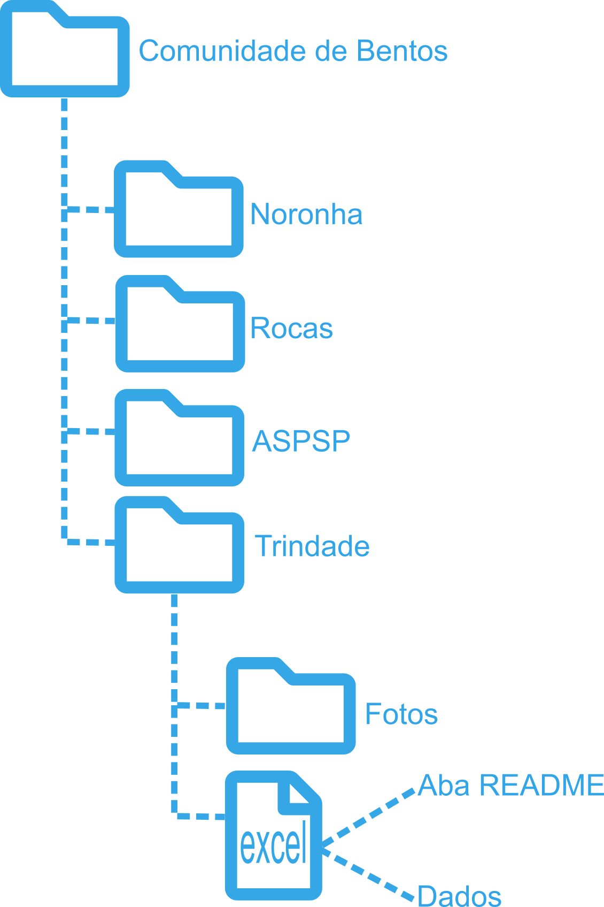
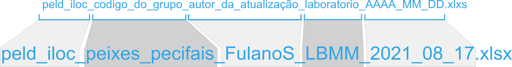

Padronização Bases de Dados
1. Visão Geral
Este documento tem como objetivo registrar os padrões a serem seguidos pelos pesquisadores da rede para a formatação das bases de dados produzidas no âmbito do PELD-ILOC. Os formatos e procedimentos aqui descritos são um resultado do workshop realizado em 17 de setembro de 2021.
2. Padronização dados PELD-ILOC
Os banco de dados do PELD-ILOC é constituído por diferentes fontes se subdividindo quanto ao grupo taxômico ou variável amostrada. Basicamente são constituídos pelas últimas versões dos arquivos excel, alguns estão separados por ilhas e outros por grupo taxonômico.
A partir da análise dos arquivos disponíveis verificou-se que alguns ítens não são padronizados e/ou precisam de algum ajuste. A tabela abaixo, lista os grupos de variáveis que precisam ser revisados. Os ítens de verificação são os seguintes:
| Item de verificação | Ação necessária |
|---|---|
| Coordendas geográficas | Inspeção de formato (graus decimais) e conferência de localização |
| Nomes das Ilhas (Island) | Inspeção e padronização ortográfica |
| Nomes de locais (site) | Inspeção e padronização ortográfica |
| Datas | Padronização de formato (DD, MM e YYYY em colunas separadas) |
| Nomes de variáveis | Verificar Ortografia e sugestão de nome para facilitar a leitura |
| Nomes de espécies | Correção de nomes de espécies (via Worms) |
| Adição de aba README | Criação desta aba |
| Fotos analisadas | Verificar nome do arquivo de foto e/ou video e verificar se estão nas pastas |
2.1 Coordenadas e nomes de sites
A conferência de coordenadas e nomes de locais gerou um arquivo de referência. Este arquivo foi obtido com informações pessoais de pesquisadores que estiveram nos locais e com base em publicações do PELD-ILOC.A idéia é que este arquivo seja atualizado ao passo que bases de dados sejam revisadas e conferidas.
Arquivo excel com as coordendas confirmadas para cada site.
peld_iloc_site_coordinates_Thiago_Silveira_2021_08_11.xlsx
A tabela abaixo lista o status de confirmação de nomes de sites e coordenadas do PELD-ILOC:
| Grupo | Status |
|---|---|
| Peixes Recifais | |
| Bentos (Noronha e Rocas) | |
| Grapsus | |
| Bioprospecção | |
| BRUVs | |
| Colônias de Coral (G.longo) | |
| Dinoflagelados | |
| Interação Peixes-Bentos | |
| Zooxantelas |
Uma dica importante: Na hora da revisão das coordendas é sugerido que se formate esta coluna como texto. Isso evita a formatação automática que o excel faz caso você esteja usando o padrão de linguagem em Português.
2.2 Datas
O formato de registro de datas a ser adotado é dia, mês e ano (DD/MM/AAAA) em colunas separadas.
2.3 Nomes de variáveis
Sugere-se que se use somente letras minúsculas com separação entre palavras usando "_".
Abaixo algumas sugestões de nomes de variáveis:
| Variável | Boa opção | Evitar |
|---|---|---|
| Temperatura máxima (graus Celsius) | max_temp_c | Maximun Temp (C°) |
| Precipitação (mm) | precip_mm | prec |
| Massa (Kg) | massa_kg | Massa (Kg) |
| Visibilidade horizontal (metros) | vis_hrz_m | visib (m) |
| Latitude (graus decimais) | lat_DD | lat |
2.4 Nomes de espécies
Os nomes das identificações taxonômicas podem ser confirmados utilizando-se funções do pacote worms e rfishbase. Devem ser revisados os casos de espécies novas.
Abaixo um exemplo de como fazer a validação de nomes de espécies usando o pacote worms. O mesmo procedimento pode ser realizado também usando o pacote rfishbase. Scripts de exemplo podem ser acessados neste repositório do PELD-ILOC.
library(worms)
# Criando o vetor de táxons
sp_Names = unique(DF.benthos$name)
# Passo 1
# Extraindo taxon rank do WoRMS e identificando os nomes inválidos
scNames_rank = wormsbynames(sp_Names, verbose = F)
# Passo 2 - listando os nomes não aceitos
scNames_rank %>%
filter( status == "unaccepted")
# Alterando os nomes manualmente para os nomes válidos indicados pelo WoRMS
DF.benthos = DF.benthos %>%
mutate(name = str_replace(name, pattern = "favia_leptophylla", replacement = "mussismilia_leptophylla")) %>%
mutate(name = str_replace(name, pattern = "protopalythoa", replacement = "palythoa")) %>%
# Passo 3 - Rodando novamente para confirmar
sp_Names = unique(DF.benthos$name)
scNames_rank = wormsbynames(sp_Names, verbose = F)
scNames_rank %>%
filter( status == "unaccepted")
# Zero issues - ok2.4.1 Bases de dados com morfotipos e gêneros/espécies
Alguns bancos de dados possuem classificações em morfotipos. Além disso, no caso planilhas da comunidade bentônica, as planilhas apresentam um formato mixto de organização, fruto da saída de softwares como o CPCe. As primeiras colunas com variáveis descrevendo os locais de coleta seguido por e repetições de colunas com nomes de espécies com os respectivos valores de cobertura relativa. Essa estrutura dificulta o uso dos dados, pois não há uma coluna filtro para separar as classificações em espécie, gênero, areia e frame, por exemplo.
Com o objetivo de armazenar dados gerados pelo PELD-ILOC somente em planilhas longas (Tidy data; ver item 3.2 Formatos) são necessários alguns passos para chegar a este formato. Abaixo um guia com uma das maneira de chegar ao formato longo com rótulo de classificação. Acesse neste repositório um set de dados fictícios para rodar o exemplo.
- No excel, agrupe as colunas de táxons, morfotipos e outras categorias que estiverem disponíveis conforme abaixo. O arquivo de dados de exemplo já está nesta organização.

- Após agrupar as variáveis use o script abaixo para reorganizar a planilha em um formato longo com rótulo de classificação.
library(tidyverse)
DF.sites_rocas = read_delim("data_Rocas_final_EXEMPLO_SP-MORFO_TEST.CSV",
na="NA",
delim = ",",
skip_empty_rows = TRUE)
# Pivoting rocas data Genus and species
DF.sites_rocas_sp = DF.sites_rocas %>%
pivot_longer(
cols = dragmacidon_reticulata:polymastia_janeirensis,
values_to = "count"
) %>%
add_column(cat = "genus or species") %>%
select(-coral:-aborescente_3)
# Pivoting rocas data morfotype
DF.sites_rocas_morfo = DF.sites_rocas %>%
pivot_longer(
cols = coral:aborescente_3,
values_to = "count"
) %>%
add_column(cat = "morfotype") %>%
select(-dragmacidon_reticulata:-polymastia_janeirensis)
# Pivoting rocas data substrate
DF.sites_rocas_subs = DF.sites_rocas %>%
pivot_longer(
cols = frame:areia,
values_to = "count"
) %>%
add_column(cat = "substrate") %>%
select(-dragmacidon_reticulata:-aborescente_3)
DF.benthos_rocas_long = bind_rows(DF.sites_rocas_sp, DF.sites_rocas_morfo, DF.sites_rocas_subs)
write_csv(DF.benthos_rocas_long, "DF.benthos_rocas_long.csv") - Foram criadas três colunas: name (nome da espécie ou classe de cobertura), count (contagem, cobertura relativa,…) e cat (categoria: genus or species, morfotype ou subtrate). Após rodar este script o resultado deve estar como o esquema abaixo.

2.5 Arquivo ou aba README
Será adotado pelo PELD-ILOC que todos os arquivos de dados produzidos apresentem uma aba ou arquivo README. A adição destas informações, ou metadados. é importante compreenssão do que está sendo apresentado no arquivo.
Neste respositório você pode acessar dois exemplos de bancos de dados com os dados e metadados (README).
2.6 Tipos de arquivos
Os dados dos diferentes grupos e variáveis amostradas no PELD-ILOC são armazenadas em arquivos excel. Os arquivos tipo .xlsx são adequados para o armazenamento dos dados e são de fácil acesso e edição por todos os usuários das rede. Também são aceitos arquivos do tipo .csv, desde de que sigam as orientações a seguir. Além dos arquivos de dados, são armazenados também arquivos de fotos e vídeos.
3. Estrutura dos arquivos
3.1 Banco de dados simples
Abaixo um modelo simples de organização de dados para os Peixes Recifais:

Ainda no mesmo arquivo, sugere-se fortemente que seja adicionada uma aba README.
Caso sejam dados apresentados em formato .txt ou .csv, sugere-se a criação de uma pasta zip com dois arquivos: os dados e o arquivo README

3.2 Bancos de Dados acompanhados de outras mídias (Fotos e Videos)
Algumas bases de dados são mais complexas e apresentam além de um arquivo com os dados, apresentam também pastas com fotos analisadas em Photoquad ou CPCe.
Abaixo um modelo de organização proposto para Comunidade de Bentos:

3.3 Nomeando arquivos
Considerando os tipos de dados disponíveis, sugere-se que os arquivos sejam nomeados da seguinte maneira:

Com o objetivo de padronizar os nomes dos grupos, abaixo segue uma sugestão:
| Grupo | Tipo de informação | Sugestão de código para o grupo |
|---|---|---|
| Peixes Recifais | Comunidade de peixes recifais | Peixes_Recifais |
| Bentos | Fotoquadrados de Bentos | Bentos |
| Grapsus | Marcação e recaptura | MR_Grapsus |
| Grapsus | Censo | Censo_Grapsus |
| Grapsus | Captura | Captura_Grapsus |
| Zooxantelas | Registro de coleta | Zooxantelas |
| Interação peixes e Bentos | Análise de Video | IntBentospeixes |
| Bruvis | Videos e planilhas | Bruvis |
| Dinoflagelados | Registro de coleta | Dinoflagelados |
4. Backup dos dados
Os dados enviados de cada grupo estão sendo salvos em um repositório do Google Drive. Estes arquivos enviados também são salvos nos computadores dos pesquisadores que estão analisando os dados, obviamente. No entanto, não foi detectado um protocolo formal de como e onde estes arquivos estão sendo salvos com a curadoria do PELD-ILOC.
A sugestão é que se aplique a regra do 3-2-1.
3 cópias diferentes ou versões: três cópias com versões de diferentes períodos. Por exemplo, atualmente temos uma versão 1 da pasta com todos os dados enviados. Após o workshop teremos uma versão 2 com todos o bancos de dados atualizados e conferidos. Depois de tabular todos os dados de uma próxima expedição poderemos ter a versão 3 temporal do conjunto de dados;
2 tipos de mídias: Ter a cópia das versões em mais de um tipo de mídia, por exemplo, HD/pen drive e um computador. De preferência que estes não fiquem no mesmo local.
1 cópia em local externo: Serviços como Google Drive ou DropBox.